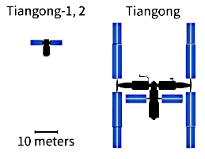
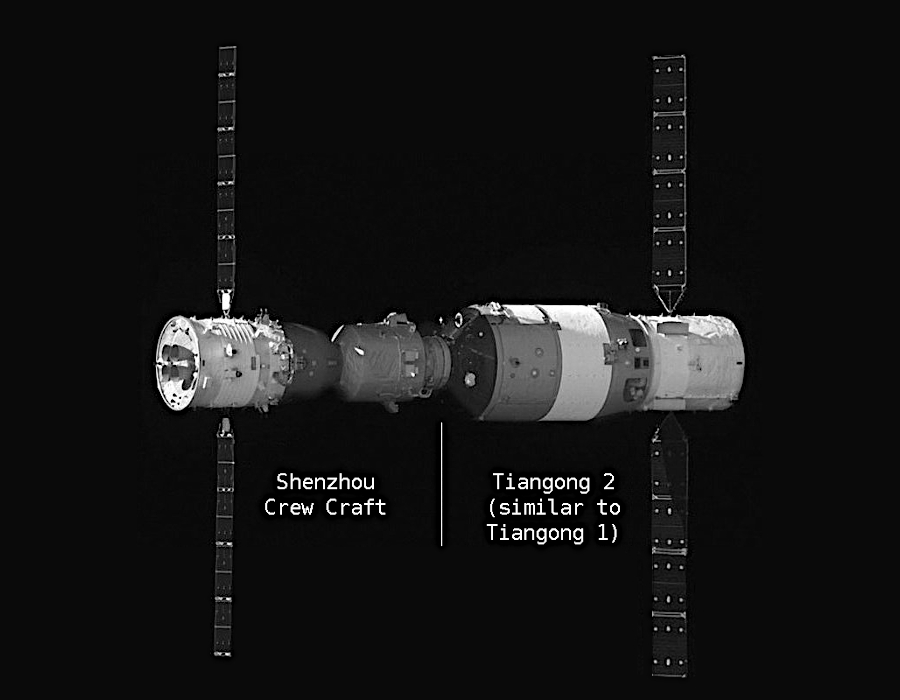
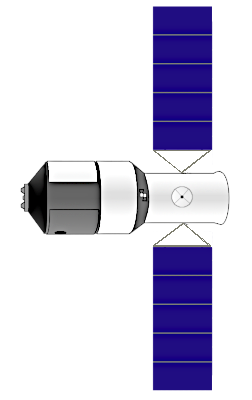
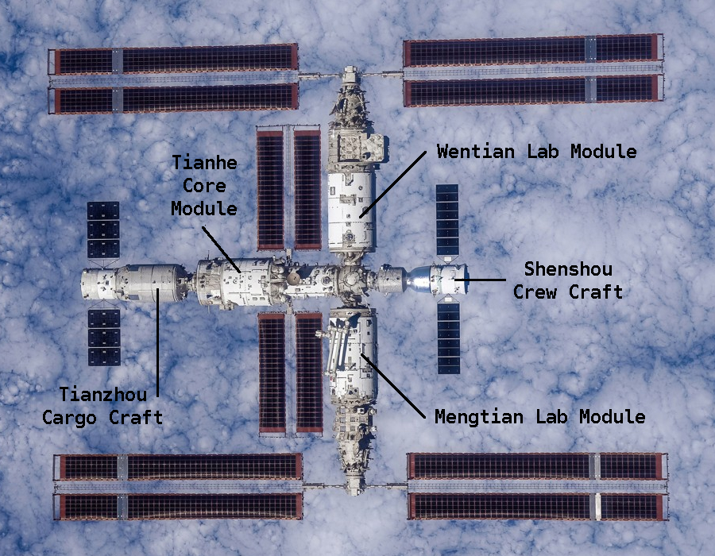

The first two stations, Tiangong-1 and 2, were single module units launched, un-crewed, complete into low earth orbit. They were of similar design and remained in orbit for around six and three years respectively. A third station of similar design, but larger, was proposed but never built.
The third station to be flown, Tiangong Space Station, is a multi-modular design with currently three main modules. Each module was launched, un-crewed, separately into low Earth orbit. They were then permanently berthed together.
They were initially docked by remote control and then relocated to their final position by the crew, using a robot arm.

This page gives an overview of the different basic designs of the stations with links to pages containing more technical details. Select from the sub-menu above for detail pages.
Note: Technical pages open in a new tab. Exit page to return to this page. Technical pages are not comprehensive. Use links below for more information.
Reference: Wikipedia - Tiangong-1 | Tiangong-2 | Tiangong-3 | Tiangong Space Station
eoPortal - Tiangong | China Space Report - Tiangong
| China Manned Space - Tiangong
Science Partner Journals - Tiangong



{kind=link}
{kind=link}